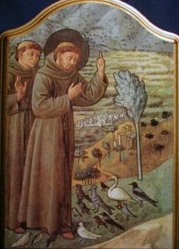
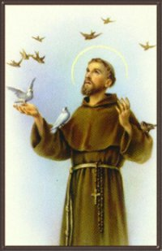
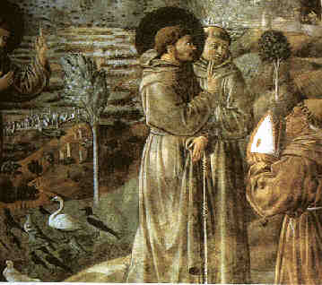
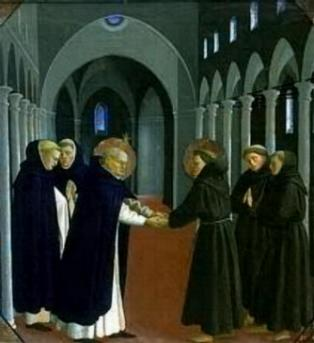
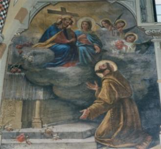
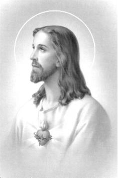
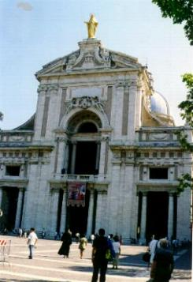
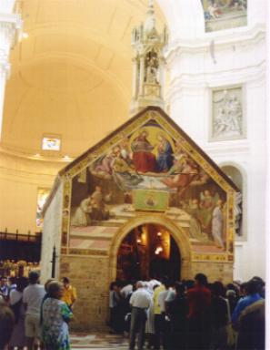
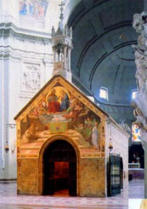
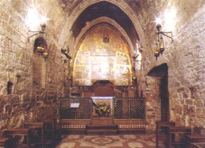

SERMÃO DAS AVES
Certo dia, Francisco, em companhia de
Frei Masseu e Frei Ângelo, saiu para uma 
“Minhas irmãzinhas aves, vocês devem muito a DEUS, o CRIADOR, e por isso, em todo lugar que estiverem devem louvá-LO, porque ELE lhes permitiu que voassem para onde quisessem, livremente, da mesma forma que devem agradecer o alimento que ELE lhes dá, sem que para isso tenham que trabalhar; agradeçam ainda a bela voz que o SENHOR lhes proporciona, que lhes permitem realizar lindas entonações! Vejam, minhas queridas irmãzinhas, vocês não semeiam e não ceifam. É DEUS quem lhes apascenta, quem lhes dá os rios e as fontes, para saciar a sede; quem lhes dá os montes e os vales, para o seu refúgio e lazer, assim como lhes dá as árvores altas, para fazerem os ninhos. Embora não saibam fiar e nem coser, DEUS lhes concede admiráveis vestimentas para todas vocês e seus filhos, porque ELE lhes ama muito e quer o bem estar de vocês. Por isso, minhas irmãzinhas, não sejam ingratas, procurem sempre se esforçarem em louvar a DEUS.”
Acabando de dizer-lhes estas palavras, todas as aves num gesto quase uniforme, começaram a abrir os bicos e esticar os pescoços, à medida que abriam as asas e inclinavam reverentemente a cabeça até á terra, cantando, demonstrando assim que Francisco lhes havia proporcionado uma grande satisfação!
Finalmente, São Francisco lhes fez o Sinal da Cruz e deu-lhes licença de se retirarem. Então, todas aquelas aves se levantaram no ar com um maravilhoso canto, e logo se dividiram em revoadas e desapareceram atrás das colinas e das matas.
Frei Tomás de Celano, célebre hagiógrafo de São
Francisco, escreveu que dias 
“Irmãs andorinhas, parece-me que agora é minha vez de falar. Já cantaram e falaram bastante! Escutem, pois, a palavra de DEUS e fiquem silenciosas enquanto eu falo!”
Elas pararam e fizeram um grande silêncio, por todo o tempo que ele falou.
MISSÕES NA ITÁLIA
No seu modo de falar,
havia algo de insinuante que persuadia e atraía 
Sobre ele e seus Frades, o Cônego francês Tiago de Vitry escreveu em 1216:
“Achando-me na corte pontifícia vi coisas que me entristeceram, porque havia muita gente preocupada com questões temporais e mundanas. Porém, vi também uma coisa que muito me consolou. Grande número de pessoas, tanto nobres como plebeus, renunciaram ao mundo, abandonaram tudo por amor a CRISTO. Eles são chamados “Frades Menores”, e devo dizer que por sua santidade e pelos seus méritos, são tidos em grande consideração e honra pelo Papa e Cardeais.”
E verdadeiramente, Francisco e seus frades, procuravam com perseverança, viver o Evangelho do SENHOR.
Em certa ocasião, sucedeu que alguns malfeitores que habitavam um bosque nas proximidades do Convento franciscano de Monte Casale, com o objetivo de assaltar as pessoas que por ali passavam, foram pedir pão aos frades. Ouviram a resposta que não ficava bem para a Comunidade Religiosa dar-lhes esmola, porque eles eram assaltantes e ladrões.

“Meus filhos, se fizerem como vou dizer-lhes, tenho a esperança de conseguir diante de DEUS, a salvação das almas daqueles homens. Preparem uma boa quantidade de pão e vinho e levem ao bosque, onde eles se encontram. Convide-os em voz alta dizendo assim: Irmãos assaltantes, venham cá sem medo, nós somos frades e lhes trazemos pães e vinho! Com certeza eles virão e logo ajeitarão uma toalha no chão, arrumando-a como se arruma uma mesa e vocês, humildemente deverão servi-los e permanecer alegres enquanto eles comem. Depois, quando acabarem de comer, vocês deverão falar-lhes sobre DEUS, ensinando-lhes o imenso Amor do CRIADOR por cada um de seus filhos. E por último, complementando esta prova de amizade que vocês vão oferecer-lhes, peçam-lhes um favor: Deles prometerem ao assaltar as pessoas, não matar ninguém e nunca maltratá-las com golpes e socos.”
“Procedendo assim, seguramente eles não negarão, consentirão em lhes fazerem a promessa, isto, em troca da bondade e do procedimento humilde de vocês.”
“No dia seguinte, deverão visitá-los outra vez com a desculpa de lhes agradecer a promessa que fizeram, e deverão levar-lhes além de pães e vinho, alguns ovos frescos cozidos e um bom queijo. Com certeza eles ficarão muito felizes. Quando tiverem terminado de comer, deverão dizer-lhes: Irmãos nossos, porque ficam aqui passando fome e suportando o calor e o frio, além de comprometerem a salvação de suas almas? Melhor fariam se servissem ao SENHOR, porque ELE não deixará de conceder-lhes o que necessitam, ao mesmo tempo em que salvará as suas almas!”
“Com estas palavras, meus filhos, afirmo-lhes que o SENHOR providenciará a conversão daqueles pobres coitados, em recompensa pela humildade, paciência e boa vontade de cada um de vocês!”
Os frades foram e fizeram como Francisco lhes ensinou e aconteceu exatamente como ele havia previsto. Enquanto alguns permaneceram indiferentes, diversos daqueles homens se empenharam em agradecer aos frades a confiança e demonstração de amizade, procurando sempre de alguma maneira retribuir, trazendo-lhes lenha e ajudando em serviços mais pesados. Finalmente, alguns deles foram despertados pelo chamado Divino e entraram na Ordem dos Franciscanos.
INDULGÊNCIA DA PORCIÚNCULA
Numa noite do mês de Julho de 1216,
como acontecia em tantas outras noites, na silenciosa solidão
da pequena Igreja da Porciúncula, São Francisco ajoelhado no
chão 
“Qual o melhor auxílio que desejaria receber, para conseguir a salvação eterna das almas?”
Sem hesitar Francisco respondeu: “Santíssimo PAI, peço que todos aqueles arrependidos e confessados, que vierem visitar esta Igreja, conceda-lhes um amplo e generoso perdão, uma completa remissão de todas as suas culpas.”
“O que você pede Frei Francisco, é um benefício muito grande,” disse-lhe o SENHOR, “muito embora você seja digno e merecedor de muitas coisas. Assim, acolho o seu pedido, com uma condição, você deverá solicitar essa indulgência ao meu Vigário na Terra.”
No dia seguinte, bem cedinho, Francisco acompanhado de Frei Nassau, seguiu para Perúgia, a fim de se encontrar com o Papa Honório III. Diante de sua Santidade, falou:
“Santo Padre, há algum tempo, com o auxílio de DEUS, restaurei uma Igreja em honra a Santa Maria dos Anjos. Venho pedir a Sua Santidade colocar nesta Igreja uma indulgência para quem visitá-la, sem a obrigação da pessoa oferecer qualquer coisa em pagamento ( naquela época, toda indulgência concedida a uma pessoa, estava ligada à obrigação dessa pessoa fazer uma oferta), a partir do dia da dedicação dela.”
O Papa ficou surpreso e comoveu-se com o incomum pedido. Depois perguntou: “Por quantos anos você quer esta indulgência?”
“Santo Padre, não peço anos, mas penso em almas”, respondeu Francisco.
“O que você quer dizer com isto?”
“Se Sua Santidade estiver de acordo, eu queria que todas as pessoas que visitassem Porciúncula, contritos de seus pecados, em estado de “graça”, confessado e tendo recebido à absolvição sacramental, obtenham a remissão de todos os seus pecados, na pena e na culpa, no Céu e na Terra, desde o dia de seu batismo até o dia em que entrar na Igreja.”
“Mas não
é um costume da Cúria Romana conceder tal indulgência!” 
“Senhor, falou o “Poverello”, este pedido não faço por mim, mas por ordem de JESUS CRISTO, da parte de Quem estou aqui.”
Ouvindo isto o Papa cheio de amor respondeu três vezes seguidamente:
“Em nome de DEUS, meu filho, concedo-lhe esta indulgência.”
Como alguns Cardeais estavam presentes e quiseram interferir, o Papa confirmou:
“Já concedi a indulgência. Todo aquele que entrar na Igreja de Santa Maria dos Anjos, sinceramente arrependido de suas faltas e confessado, seja absolvido de toda pena e de toda culpa. Esta indulgência valerá somente durante um dia, em cada ano,“in perpetuo”, a começar das primeiras vésperas, incluída a noite, até às vésperas do dia seguinte.”
A “consagração” da Igrejinha aconteceu no dia 2 de Agosto do mesmo ano de 1216. Assim sendo, a mencionada indulgência começa às 12 horas do dia 1 de Agosto até o entardecer do dia 2 de Agosto, todos os anos. A indulgência é conhecida com o nome: “DIA DO PERDÃO”.Para recebê-la, a pessoa deve estar em "estado de graça", rezar um CREDO, um PAI NOSSO e um GLÓRIA, fazendo o pedido a DEUS da Indulgência Plenária, e a seguir, rezar um PAI NOSSO, uma AVE MARIA e um GLÓRIA pelas intenções de Sua Santidade o Papa. Estas orações devem ser numa Igreja, diante do Santíssimo Sacramento, mesmo estando fechado o Sacrário.




1 - Basílica de Santa Maria dos Anjos; 2 - Capela da Porciúncula dentro da Basílica; 3 - Detalhe da Capela no interior da Basílica; 4 - Interior da Capela da Porciúncula.